Proof index — szybki przegląd wizualny przed drukiem.
AUTOMATED PASS ≠ PRINT PROOF APPROVED. Ta strona służy do przeglądu przez człowieka. Walidacja maszynowa jest w qa/report.html.
Golden cards
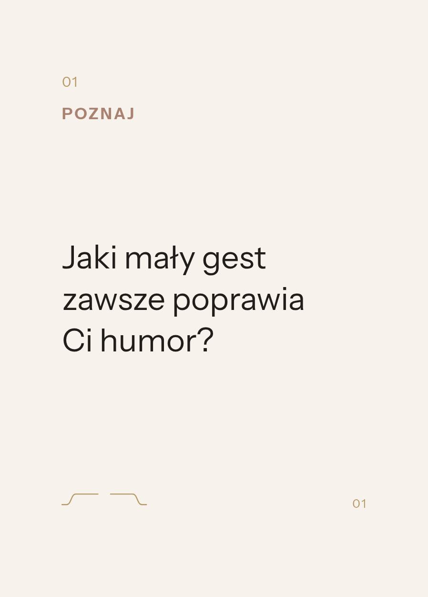
Q01PASSJaki mały gest zawsze poprawia Ci humor?16pt / 21pt · 3 w. · preferred (etap 1/10) · score 96.49szerokość 43.2308mm / 44mm · zapas 0.7692mm · gęstość 2.77%
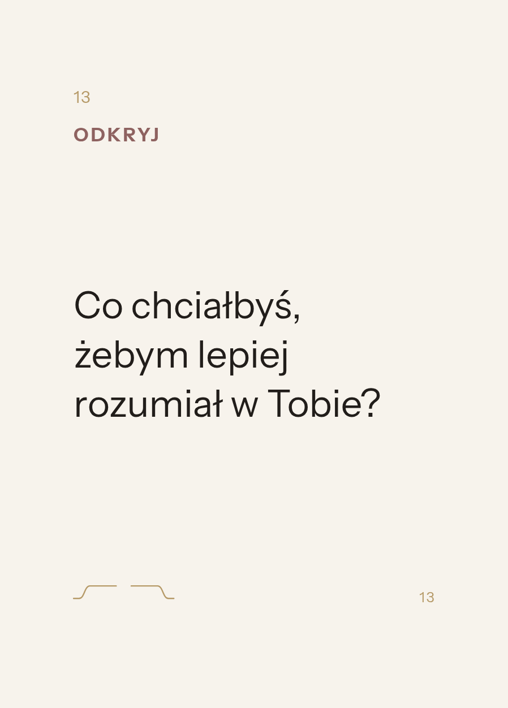
Q13PASSCo chciałbyś, żebym lepiej rozumiał w Tobie?16pt / 21pt · 3 w. · widen-measure-1 (etap 2/10) · score 93.2szerokość 45.9006mm / 46mm · zapas 0.0994mm · gęstość 2.92%
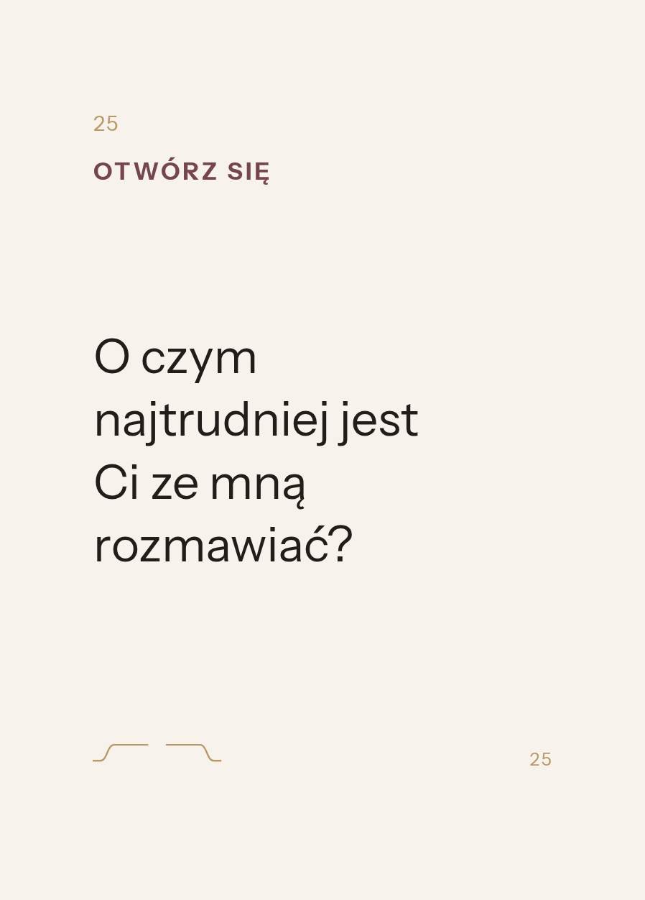
Q25PASSO czym najtrudniej jest Ci ze mną rozmawiać?16pt / 21pt · 4 w. · preferred (etap 1/10) · score 90szerokość 38.3484mm / 44mm · zapas 5.6516mm · gęstość 3.06%
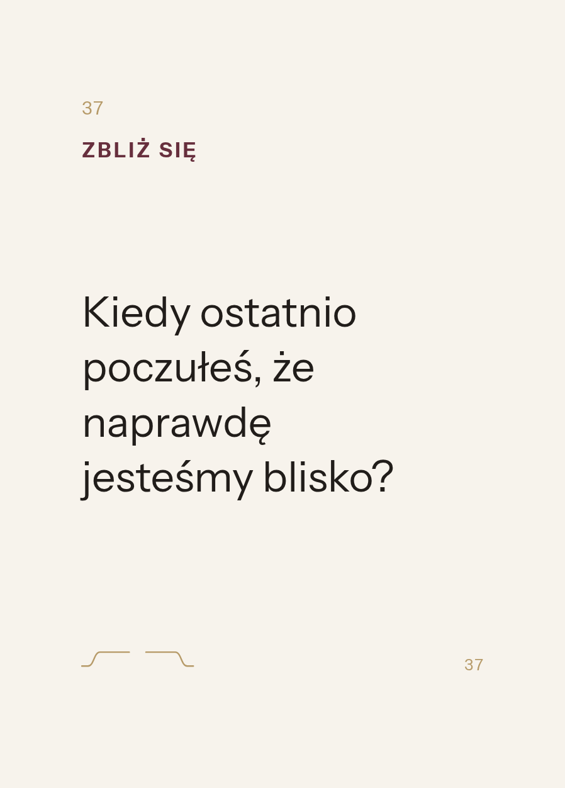
Q37PASSKiedy ostatnio poczułeś, że naprawdę jesteśmy blisko?16pt / 21pt · 4 w. · preferred (etap 1/10) · score 95.33szerokość 42.006mm / 44mm · zapas 1.994mm · gęstość 3.63%
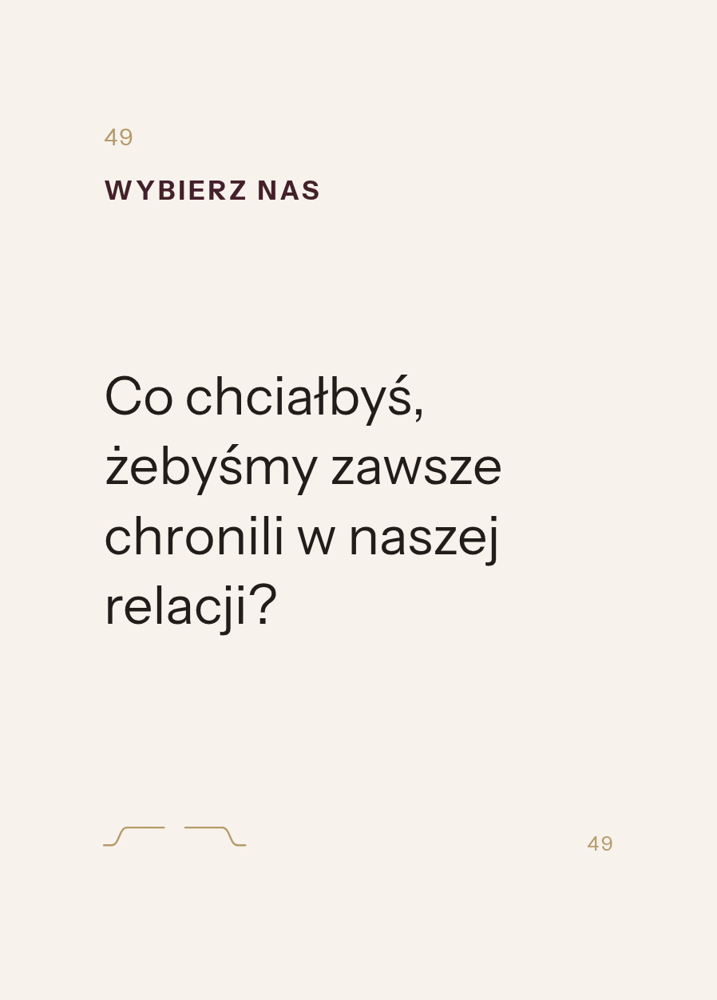
Q49PASSCo chciałbyś, żebyśmy zawsze chronili w naszej relacji?16pt / 21pt · 4 w. · preferred (etap 1/10) · score 96.23szerokość 42.2938mm / 44mm · zapas 1.7062mm · gęstość 3.70%
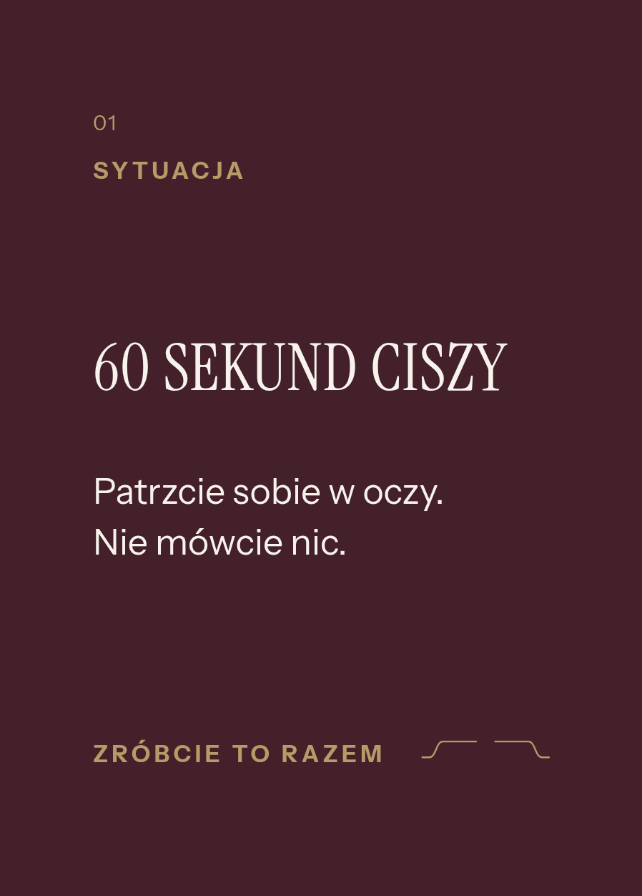
S01PASS60 SEKUND CISZY — Patrzcie sobie w oczy. Nie mówcie nic.brak auto-fituszerokość 48.9571mm / 50mm · zapas 1.0429mm · gęstość 3.69%
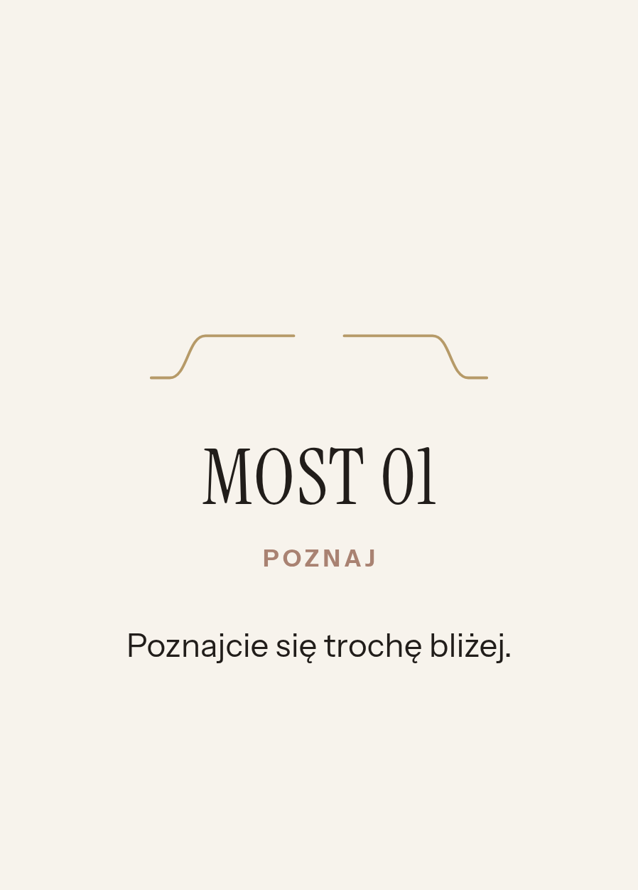
B01PASSPoznajcie się trochę bliżej.brak auto-fituszerokość 45.9147mm / 46mm · zapas 0.0853mm · gęstość 2.29%
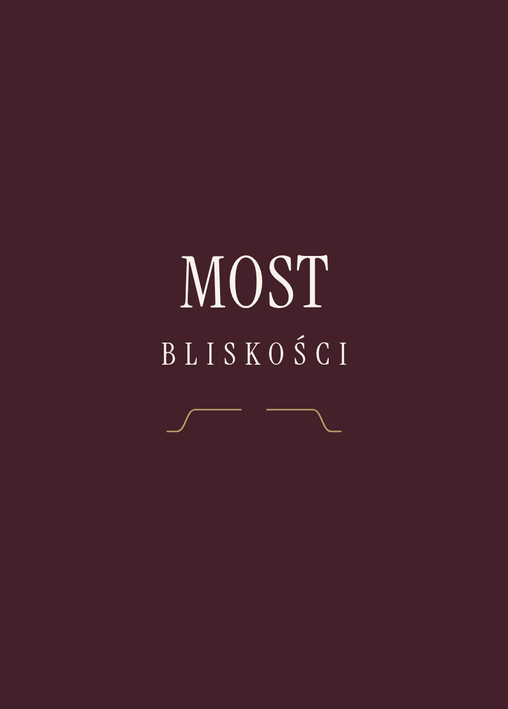
BACKPASSRewers, wspólny dla całej taliibrak auto-fitugęstość 1.50%
Przypadki skrajne (wybrane automatycznie)
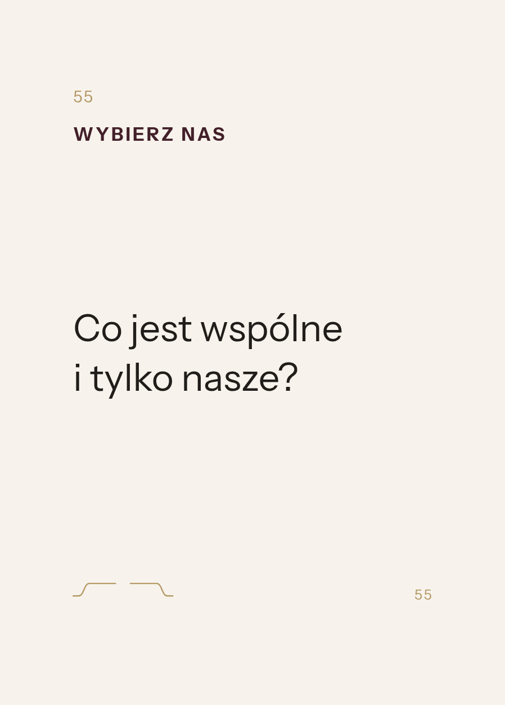
Q55najkrotsze pytaniePASSCo jest wspólne i tylko nasze?16pt / 21pt · 2 w. · preferred (etap 1/10) · score 100szerokość 40.64mm / 44mm · zapas 3.36mm · gęstość 2.25%
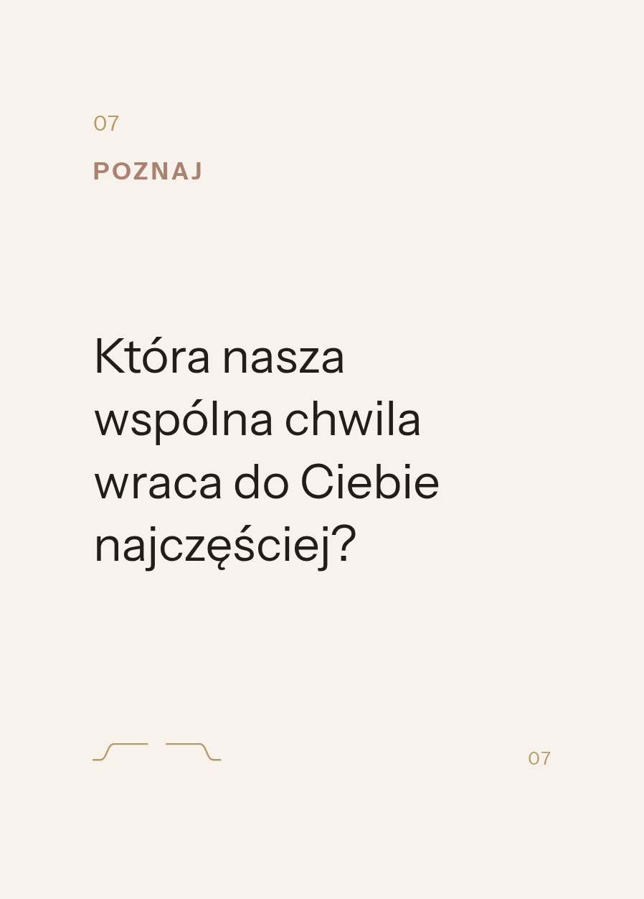
Q07najdluzsze pytaniePASSKtóra nasza wspólna chwila wraca do Ciebie najczęściej?16pt / 21pt · 4 w. · preferred (etap 1/10) · score 95.17szerokość 40.9617mm / 44mm · zapas 3.0383mm · gęstość 3.65%
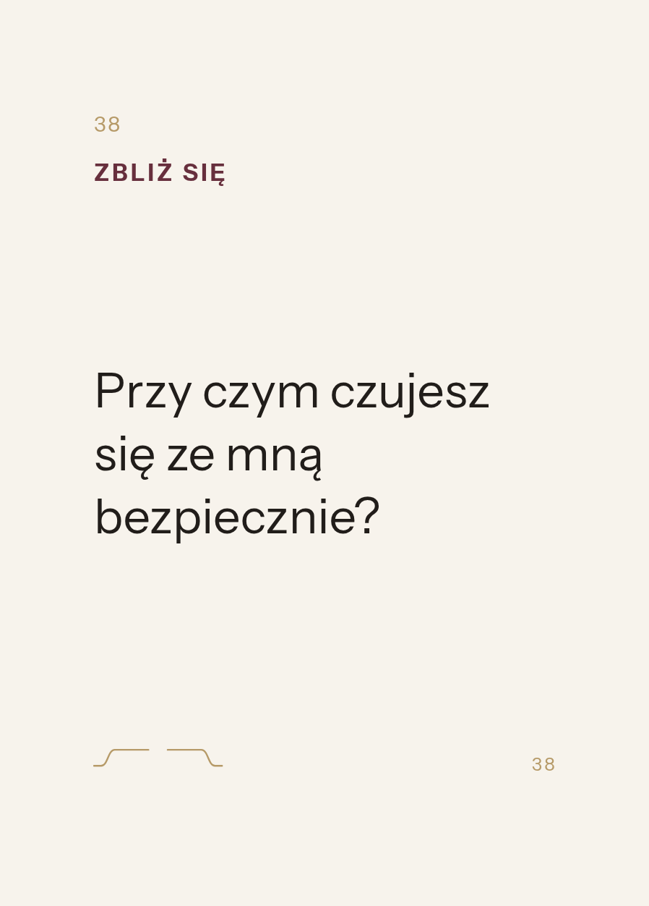
Q38najszerszy wierszPASSPrzy czym czujesz się ze mną bezpiecznie?16pt / 21pt · 3 w. · widen-measure-2 (etap 3/10) · score 81.2szerokość 46.4876mm / 48mm · zapas 1.5124mm · gęstość 2.80%
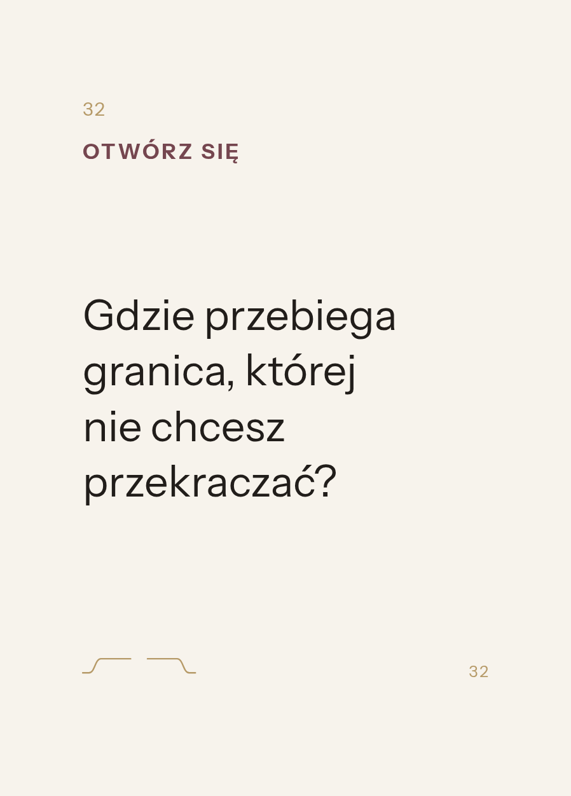
Q32najwyzsza gestoscPASSGdzie przebiega granica, której nie chcesz przekraczać?16pt / 21pt · 4 w. · preferred (etap 1/10) · score 93.87szerokość 41.8592mm / 44mm · zapas 2.1408mm · gęstość 3.80%
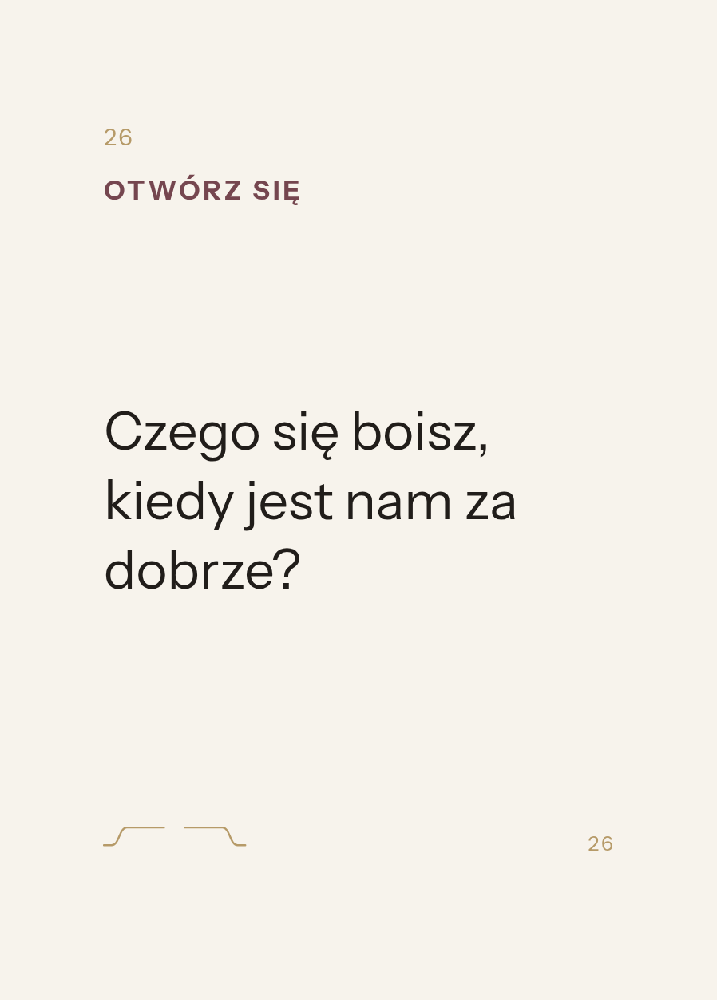
Q26najmniejszy margines do safe areaPASSCzego się boisz, kiedy jest nam za dobrze?16pt / 21pt · 3 w. · preferred (etap 1/10) · score 97.84szerokość 43.9138mm / 44mm · zapas 0.0862mm · gęstość 2.94%
{kind=link}
{kind=link}
{kind=link}
{kind=link}
{kind=link}
{kind=link}
{kind=link}
{kind=link}
{kind=link}
{kind=link}